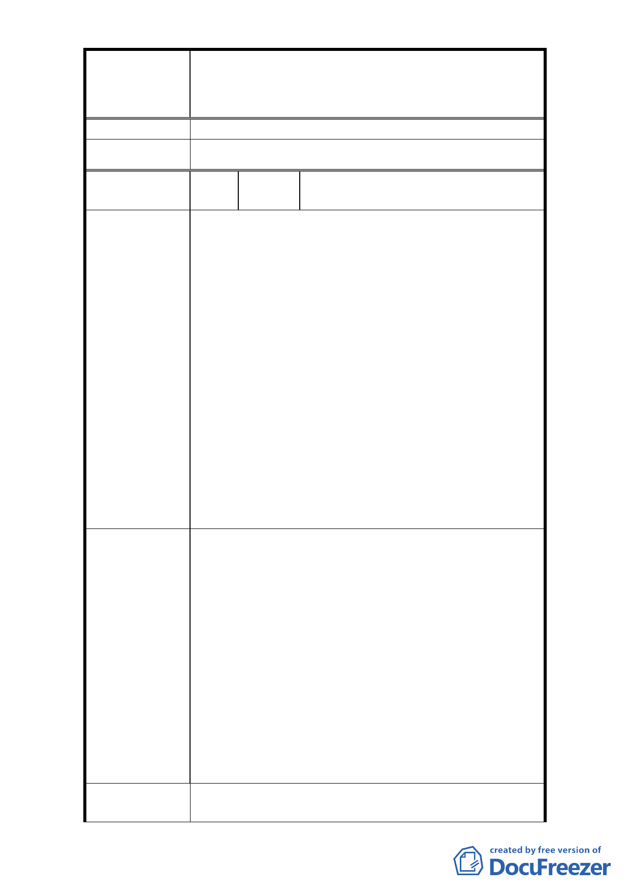

修訂臺北市大安區青田街保存區聚落風貌保存專用區細部計
案
名
畫、變更部分第三種住宅區、第三種商業區(特)為第三種住宅區
(特)(日式宿舍)及第三種商業區(特)(日式宿舍)暨劃定週邊地
區都市設計管制細部計畫案
施作。
委 員 會 決 議 依市府回覆意見辦理。
編
號
28
陳情人
洪美涵、施澔霖、蘇之涵、陳思安、
翁鉅奇、古蓮嬌、林如瑩、張淑娟
1. 社區聚落風貌是特別的日式宿舍，不保存這樣的社
區特色，臺北市將被高樓大廈所掩埋。
2. 不需變更，變更後會改變古蹟風貌。
3. 既是臺北市人文特色區塊，該用心好好規劃此處，
而不是倉促地動工。此外，既是住宅街區，是否與
周邊居民對於居住環境有良好溝通？
4. 青田街的綠樹、日式房舍保存、土地保水等都是目
陳 情 理 由 前居住舒適的良好條件。因此獎勵等是較不合理且
讓民眾忘卻目前已有的，去追求不適合他們的美好
理想。
5. 保留聚落風貌保存區域，整建需要有限制，永續經
營才是根本之道。
6. 希冀保留青田街的大樹，以及其原有的日式宿舍街
廓特色，不僅是為地球盡一份心力，也是讓後代子
孫了解青田街原有的曾經。
1. 保留社區特色，原計畫不更改。
2. 不需修改計劃，維持原本方式。
3. (1)文化局、觀光局及都發局是否已有跨局處共識？
建議三者的規劃應相互協調，取得對於社區區塊的
使用共識。(2)日式宿舍是臺北市難得的記憶及特
色，也是鄰近居民的生活，建議與居民協調後再進
建 議 辦 法 行發包或動工。
4. 維持原計畫。
5. 若欲成為陸客自由行的重點區域，請文化局、觀光
局提出具體作為，如設立當地人文解說牌，逐年修
復舊居，逐漸推廣；亦可與青輔會所辦之青年壯遊
活動作結合，訓練專業的導覽人員做文化介紹。
1. 青田街細部計畫範圍內之古蹟、歷史建築及日式宿
市 府 回 覆 意 見 舍依文資法第 18 條規定，應由所有人、使用人或
- 34 -